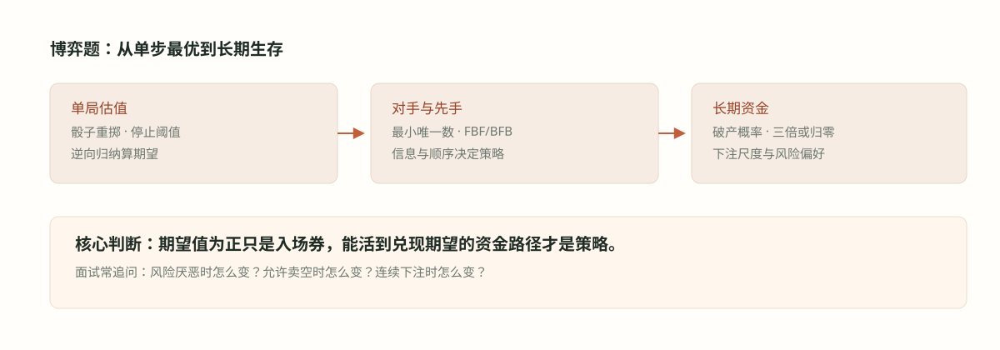

#025. 博弈二：破产、复注与下注尺度

#学习目标：同一局游戏，三种命运
设想一个五五开的公平赌局，你押 1 元。问三个不同的问题，会得到三个截然不同的答案。「玩很多局的平均结果是什么？」——期望口径：不赚不亏，每局期望变化为零。「你先输光（或先翻倍）的概率是多少？」——首达口径：取决于你和对手的资本比，资本少的一方先出局风险大得多。「长期复利下你的财富会怎样？」——增长口径：若每局押上全部身家，期望财富原地膨胀，但中位数财富步步归零。量化面试的博弈后半场，就是考你能不能在三种口径之间自由切换，并说清每个口径对「该怎么下注」的含义。
本章工具与前章的衔接：多重重掷的最优停止是024 章价值函数的直接延伸；破产概率的推导是014 章首达时间的第一步分析（first-step analysis）换了一个边界条件；Kelly 尺度与均值—中位数分裂则延续011 章关于几何平均的讨论，并通向037 章夏普比率的年化口径。
财富是随机游走，问「先碰到哪面墙」。公平局里碰上墙的概率等于起点到墙的距离占比，与中途怎么波动无关。
按财富比例下注时，长期增长由 \(\mathbb{E}[\ln g]\) 决定；最大化它给出的注码比例，既不是零也不是全押。
全押三倍或归零：期望财富每局乘 1.5，中位数却指数归零——「平均赚钱、典型破产」可以同时成立。
#知识点一：赌徒破产与首达概率
赌徒破产（gambler's ruin）的标准设定：你的财富在整数格点 \(\{0, 1, \dots, N\}\) 上随机游走，每步以概率 \(p\) 加 1、概率 \(q = 1-p\) 减 1，撞上 0（破产）或 \(N\)（达标）即停。记 \(u_{i}\) 为从 \(i\) 出发最终破产的概率。对停时的第一步分析（first-step analysis）给出递推：
怎么读：从 \(i\) 出发先走一步，到 \(i+1\) 或 \(i-1\) 后问题重启——这就是014 章的期望递推，只是解的对象从期望变成了概率。公平局（\(p = q = \tfrac12\)）时猜线性解 \(u_{i} = A + Bi\)，代回得二阶差分为零，边界条件定出：
怎么读：公平局里你的破产概率只由「距离比」决定——资本 \(i\) 对总盘 \(N\)。你 2 对庄家 1，总盘 3，破产概率 \(1 - \tfrac23 = \tfrac13\)；反过来庄家破产概率 \(\tfrac23\)。资本优势直接兑换成存活优势，与中途路径无关。不公平局（\(p \ne \tfrac12\)）时解是几何形的：
怎么读：吃亏方（\(p \lt \tfrac12\)，即 \(q/p \gt 1\)）的破产概率被指数放大，而且 \(N\) 越大越惨——小注慢慢磨只会让大数定律把负期望坐实。这条公式是本章例题 3（不利局策略）与例题 6（年度亏损概率）的共用引擎。
公平局的「公平」只保证期望不变，不保证双方胜负对半：资本悬殊时，小资本方先破产的概率远大于一半。赌场对散户的优势一半来自正期望，另一半来自「对手盘无限深」——首达公式把这句行业俗语变成了两条边界条件。
#知识点二：对数效用、Kelly 与均值—中位数分裂
当注码按财富比例 \(f\) 下注时，财富的演化是乘性的：赢则乘 \(1 + bf\)（净赔率 \(b\)，即赢进注金的 \(b\) 倍），输则乘 \(1 - f\)。\(n\) 局后：
怎么读：\(S_{n}\) 是赢的局数。取对数后乘法变加法，\(\ln W_{n} = \ln W_{0} + S_{n}\ln(1+bf) + (n - S_{n})\ln(1-f)\)——财富对数是赢局计数的线性函数，而 \(S_{n}\) 由大数定律收敛到 \(np\)。于是每局的渐近增长率是确定性常数：
最大化 \(g(f)\)：一阶条件 \(\tfrac{pb}{1+bf} = \tfrac{q}{1-f}\) 解出凯利公式（Kelly criterion）：
怎么读：分子是「每 1 元注金的期望净赔率」，除以赔率 \(b\) 得到应押的财富比例。三倍或归零（赢时注金变三倍，\(b=2\)，\(p=q=\tfrac12\)）给出 \(f^{*} = \tfrac14\)。均值—中位数分裂由此一目了然：期望财富每局乘 \(p(1+bf)+q(1-f)\)（三倍或归零里 \(f=1\) 时为 1.5），可以大于 1 且随 \(n\) 指数膨胀；但中位数财富由 \(g(f)\) 的符号决定——\(g(f) \lt 0\) 时中位数指数归零，\(g(f) \gt 0\) 时指数增长，临界点在 \(g(f)=0\)。两个口径可以长期反向，这是复注类题的核心考点。
对数增长率：\( g(f) = p\ln(1+bf) + q\ln(1-f) \)，凹函数，唯一最大值在 \(f^{*}\)。
中位数增长条件：\( g(f) \gt 0 \) 当且仅当 \( (1+bf)^{p}(1-f)^{q} \gt 1 \)；三倍或归零的临界注 \(f = \tfrac12\)，超过它中位数开始衰减。
风险偏好：风险厌恶者押「分数 Kelly」（如 \(f^{*}\) 的一半）换取更平滑的路径；风险偏好者押向 \(f=1\) 换取最高期望——代价是破产概率趋近 1。
两个理由：其一，长期财富几乎必然按 \(\exp(n g(f))\) 走（大数定律），最大化 \(g\) 就是最大化「几乎每个人」的真实年化收益；其二，对数效用的边际递减天然编码「破产无限疼」——\(f=1\) 时 \(\ln(1-f) = -\infty\)，任何正概率的归零都不可接受，这正是风控的第一性原则。
#例题详解一：三次掷骰的最优停止
例题 1：你可以掷骰子最多三次（初始一掷加最多两次重掷），必须接受最后一次的点数作为奖金。最优策略与期望价值是多少？追问：三颗骰子取最大值的游戏你愿意付更多还是更少？「付 100 倍玩一把」与「付 1 倍玩 100 把」你选哪个？
建模。记 \(V_{k}\) 为还剩 \(k\) 次掷骰机会时的期望价值（024 章的递推在这里连算三层）。边界 \(V_{0}\) 不存在——必须掷——所以从「最后一掷」起算：最后一掷的期望是 \(V_{\text{末}} = 3.5\)。倒数第二掷：收下 \(x\) 或放弃换最后一掷（价值 3.5）；倒数第三掷同理。
推导。倒数第二掷（还剩两次机会时的这一掷，收下 \(x\) 或放弃去拿最后一掷的 3.5）：
阈值：掷出 4、5、6 收下，1、2、3 重掷。最外层（还可掷三次）：
阈值升到 5：掷出 5、6 收下，其余重掷。答案：前两次机会里掷出 5、6 即停，最后一次无条件接受；期望价值 \(\tfrac{14}{3} \approx 4.67\) 元。剩余机会越多越挑剔，这正是 024 章单调性的具象化。
追问一：三颗取最大。\(\mathbb{E}[\max(X_{1},X_{2},X_{3})] = \sum_{k=1}^{6} \Pr[\max \ge k] = \sum_{k=1}^{6}\left(1 - \left(\tfrac{k-1}{6}\right)^{3}\right) = 6 - \tfrac{225}{216} = \tfrac{1071}{216} \approx 4.96\) 元。4.96 大于 4.67，三颗取最大值更多，应付更多。有趣的是它甚至略高于「四次重掷选择权」的价值（\(\tfrac{89}{18} \approx 4.94\)）：一次看三颗的信息结构比四次顺序决策还略胜——顺序决策的价值被「必须接受最后一掷」的规则压低。
追问二：100 倍一把对 1 倍一百把。期望上两者完全相同（期望的线性性：\(100 \times \mathbb{E}[\text{一把}] = \mathbb{E}[100 \text{ 把总和}]\times\) 对应倍数）。差别全在方差：一把 100 倍的标准差是 100 倍单局标准差，一百把 1 倍的标准差只有 \(\sqrt{100} = 10\) 倍——集中下注的波动是分散下注的 10 倍。风险中性者无所谓；任何风险厌恶者选一百把（大数定律把结果收拢到期望附近）；风险偏好者才选一把。若是收费入场且期望为负，则玩得越多期望亏损越大，答案反转为一把（少输）或干脆不玩。
检验。价值序列 \(3.5 \lt 4.25 \lt 4.67 \lt 4.94 \lt \cdots \lt 6\) 单调上升趋于 6，符合「机会越多价值越高、但增益递减」。阈值序列 \(3.5 \to 4.25\)（4 为界）\(\to 4.67\)（5 为界）同样单调上升，交叉验证递推没串层。
面试怎么讲。从里往外报三层：最后一掷 3.5；倒数第二层阈值 4、价值 4.25；最外层阈值 5、价值 \(\tfrac{14}{3} \approx 4.67\)。两个追问各一句话：三颗取最大 4.96 更贵；期望相同时比方差，风险厌恶选分散。把三个数字（4.25、4.67、4.96）背熟，这题的三段追问就都接得住。
#例题详解二：破产概率与冲关策略
例题 2：每局付 1 英镑掷一枚公平硬币，正面赢 1 英镑、反面输掉 1 英镑注金。你带 2 英镑，庄家（我）只有 1 英镑，一方归零即停。我把你打到破产的概率是多少？
建模。每局你的财富 ±1，总盘固定为 \(2+1 = 3\) 英镑；你的财富在 \(\{0,1,2,3\}\) 上做公平随机游走，0 为你破产、3 为我破产。要的是从 \(i=2\) 出发先碰 0 的概率——标准赌徒破产。
推导。令 \(u_{i}\) 为你在财富 \(i\) 处的破产概率：
递推的通解是线性函数 \(u_{i} = A + Bi\)（代回验证：\(A + Bi = \tfrac12(A+Bi-B) + \tfrac12(A+Bi+B)\) 恒成立）。边界条件：\(A = 1\)、\(A + 3B = 0\)，得 \(B = -\tfrac13\)：
我把你打破产的概率是 1/3；你把我打破产的概率是 2/3——资本优势以 2:1 直接兑换成胜率优势。
检验。用一般公式 \(u_{i} = 1 - \tfrac{i}{N}\) 复核：\(i=2, N=3\)，同样得 \(\tfrac13\)。另一条独立路径：公平随机游走从 2 出发，首达 \(\{0,3\}\) 的分布满足马尔汀格尔（鞅，martingale）论证 \(\mathbb{E}[\text{终态}] = 2 = 3 \times \Pr[\text{达 3}]\)，得 \(\Pr[\text{达 3}] = \tfrac23\)，破产概率 \(\tfrac13\)——两条路都通。边界直觉：你资本翻我，输的却是你的概率只有一半不到，说明「公平赌局 + 深口袋」就是结构性优势。
面试怎么讲。「总盘 3 英镑的公平破产问题：\(u_i = \tfrac12 u_{i-1} + \tfrac12 u_{i+1}\)，线性解配边界 0 和 3，从 2 出发破产概率 \(\tfrac13\)。」加一句延伸：「若局不公平（比如你胜率 48%），解变成几何形 \(\frac{(q/p)^i - (q/p)^N}{1-(q/p)^N}\)，我的胜率会显著高于 \(\tfrac13\)——负期望下没有资金管理能救你。」这句直接把话头递给下一题。
例题 3：你有 10 美元，必须博到 100 美元。每局五五开：赢则注金翻倍、输则注金归零。注额只能固定为 10 美元、1 美元或 0.01 美元之一，你选哪个？若胜率改为 40/60（赢 40%），你换策略吗？
建模。财富过程是公平随机游走（例题 2 的机制），目标从 10 到 100。关键工具是鞅的可选停止（optional stopping）：公平局里财富是无界时间内停在 \(\{0, 100\}\)（或附近）的鞅，终态期望等于起点。设 \(P\) 为成功概率、终态财富至多 100 美元（不溢出目标），则 \(100P \le 10\)，即：
而且任何「不冲过头」的策略都能取到等号——粗注细注在概率上没有差别。三种注额逐一算：10 美元注是 11 格公平破产（\(0,10,\dots,100\)），\(P = \tfrac{1}{10}\)；1 美元注是 101 格，\(P = \tfrac{10}{100} = \tfrac{1}{10}\)；0.01 美元注是 10001 格，仍是 \(\tfrac{1}{10}\)。公平局：三个选项胜率全等，均为 1/10。选大注的唯一实际收益是省时间（平均局数与注额成反比）。要警惕的是「全押」：10→20→40→80 之后若押满 80，赢则 160（溢出浪费、按 100 计已达标）、输则归零，溢出的那部分期望被白白扔掉，胜率降到 \(\tfrac{10}{160} = \tfrac{1}{16}\)——公平局里唯一的错误是冲过头。
推导（40/60 不利局）。负期望下公式换成几何形（\(q/p = 1.5\)），小注的灾难性立刻显形：1 美元注（\(N=100\) 格）的成功率为 \(\frac{1-1.5^{10}}{1-1.5^{100}} \approx \frac{57}{4 \times 10^{17}}\)，约 \(10^{-16}\)；0.01 美元注更接近零。10 美元注 + 大胆下注（bold play，能押多大押多大、但不冲过 100）则用小递推：以 10 美元为单位，状态 \(1,\dots,10\)，从 \(w\) 押 \(\min(w, 10-w)\)：
联立解得 \(f(2) \approx 0.109\)，\(f(1) \approx 0.043\)。不利局：改选 10 美元大注加大胆下注，成功率约 4.3%，比小注高出十五个数量级。原理：负漂移下每多玩一局都在向大数定律交税，唯一的活路是缩短游戏——这也是赌场限额的反面：限制你的注额上限，就是逼你「磨」，磨就是输。
检验。公平局答案 \(\tfrac{1}{10}\) 与例题 2 的 \(\tfrac{i}{N}\) 口径一致；全押冲过头的 \(\tfrac{1}{16}\) 小于 \(\tfrac{1}{10}\)，验证「溢出即浪费」。不利局方向检验：所有口径的成功率都低于公平局的 \(\tfrac{1}{10}\)，且注越细成功率单调趋零，符合几何公式在 \(q/p \gt 1\)、\(N \to \infty\) 时的行为。
面试怎么讲。「公平局里可选停止定理钉死成功率就是 10/100，三种注额等价，区别只是耗时——所以随便选，或者选大注省时间；唯一的禁忌是冲过 100 浪费溢出。改成 40/60，答案完全反过来：小注让负期望被大数定律坐实、破产概率趋于 1，必须选 10 美元大注大胆下注，成功率约 4%。」一段话讲完两个世界，这题就到位了。
#例题详解三：下注尺度与期望陷阱
例题 4（开放讨论）：三倍或归零——每局押上资本的一部分 \(f\)，50% 概率注金变三倍（即净赚 \(2f\) 倍资本）、50% 概率注金归零。\(n\) 局后期望收益是多少？你会怎么下注？风险厌恶与风险偏好者的玩法有何不同？
建模。每局财富乘 \(1+2f\)（概率 \(\tfrac12\)）或 \(1-f\)（概率 \(\tfrac12\)），是知识点二的乘性随机游走，\(b=2\)、\(p=q=\tfrac12\)。三个问题分别对应期望、增长率、风险偏好三层。
推导。期望收益：每局期望乘子 \(\tfrac{1}{2}(1+2f)+\tfrac{1}{2}(1-f) = 1+\tfrac{f}{2}\)，独立相乘：
对一切 \(f \gt 0\) 期望都指数增长，\(f=1\)（全押）时期望最大：\(\mathbb{E}[W_{n}] = 1.5^{\,n} W_{0}\)。最优下注（长期典型财富）来自 \(g(f) = \tfrac12\ln(1+2f) + \tfrac12\ln(1-f)\)，一阶条件 \(\tfrac{1}{1+2f} = \tfrac{1}{2(1-f)}\) 给出：
中位数与期望的分裂：\(g(f) \gt 0\) 等价于 \((1+2f)(1-f) \gt 1\)，即 \(f \lt \tfrac12\)。全押 \(f=1\) 时：期望 \(1.5^{n}\) 蒸蒸日上，但活过 \(n\) 局的概率是 \(2^{-n}\)，中位数财富为 0——「平均暴富、典型破产」。押 \(f = \tfrac12\) 恰在临界：典型财富原地踏步；只有 \(0 \lt f \lt \tfrac12\) 才「典型地」越玩越富，其中 \(f = \tfrac14\) 最快。风险偏好分层：风险厌恶者押分数 Kelly（如 \(\tfrac18\)），牺牲增长率换更浅的回撤；风险中性者押 \(\tfrac14\)；追求最大期望者押 \(f=1\)——概率分布上，他把全部概率质量押在「\(2^{-n}\) 的幸存路径拿 \(3^{n}\)」上，破产概率趋于 1。三种选择的概率结局：\(f \lt \tfrac12\) 时 \(\Pr[W_{n} \gt W_{0}] \to 1\)；\(f = \tfrac12\) 时趋于 \(\tfrac12\)；\(f \gt \tfrac12\) 时趋于 0——与期望口径可以完全反向。
检验。数值抽查 \(f=\tfrac14\)：\(g = \tfrac12\ln(1.5 \times 0.75) = \tfrac12\ln 1.125 \gt 0\) ✓；\(f=\tfrac12\)：\((2)(0.5) = 1\)，\(g = 0\) ✓；\(f = 1\)：\(\ln 0 = -\infty\)，破产即出局 ✓。方向核对：赔率越好 \(f^{*}\) 越大、胜率越低 \(f^{*}\) 越小，与凯利公式 \(f^{*} = \tfrac{pb-q}{b}\) 的行为一致。
面试怎么讲。「期望口径每局乘 \(1+\tfrac{f}{2}\)，全押期望最大；但长期典型财富由对数增长率决定，Kelly 给 \(f^{*} = \tfrac14\)、每局约 5.9%；全押的期望 \(1.5^{n}\) 与中位数 0 并存，这就是均值—中位数分裂。风险厌恶押分数 Kelly，风险偏好者向全押滑动、代价是破产概率趋一。」把公式、临界值 \(\tfrac12\)、分裂现象三层讲全，这题（源题原本就是开放讨论）就没有可追问的死角了。
例题 5：你只有 1 美元，每局五五开：翻倍或清零。「玩多少局之后期望收益会转负？」
建模。这是一道陷阱题：题面预设「期望终会转负」，而正确的第一反应是——它不会。分两种玩法验证。固定押 1 美元（赢则净赚 1、输则净亏 1）：每局期望变化 \(\tfrac12(1) + \tfrac12(-1) = 0\)，你的财富是鞅，任何局数下期望收益恒为 0，永不为负。全押翻倍（每局押上全部）：第 \(n\) 局后财富是 \(2^{n}\)（概率 \(2^{-n}\)）或 0（概率 \(1-2^{-n}\)），期望财富：
依然恒等于初始的 1 美元，任何 \(n\) 都不转负。
推导：那什么在「转负」？把口径换成对数或中位数，恶化从第一局就开始：全押玩法的存活概率 \(2^{-n}\) 指数坍缩，中位数财富从第 1 局起就是 0；每局对数增长的期望是 \(\tfrac12\ln 2 + \tfrac12\ln 0 = -\infty\)（0 的对数），即任何正概率的清零都让对数期望直接负无穷。固定押注口径下（允许破产垫资、永不停止），对数口径同样不占便宜：财富从 \(W\) 变到 \(W+1\) 或 \(W-1\)，两支的乘积 \(\tfrac{W+1}{W} \cdot \tfrac{W-1}{W} = 1 - \tfrac{1}{W^{2}} \lt 1\)——赢一元与输一元对复利路径的影响不对称，波动率拖累让中位数路径缓慢走低（同 011 章几何平均 \(\sqrt{1.1 \times 0.9} \lt 1\) 的机制）。题目问「多少局后转负」的正确回答是：期望永远不转负，转负的是你的典型处境——问句本身把「期望」与「大概率结果」混为一谈，指出这一点就是这道题的考点。
检验。鞅口径：两种玩法的财富过程均为鞅（全押版本的终态支撑 \(\{0, 2^{n}\}\)，期望恒 1 ✓）。中位数口径：全押 \(n \ge 1\) 时中位数为 0 ✓。与例题 4 的分裂框架完全一致：\(f=1\) 时 \(\mathbb{E}[W_n] = 1.5^{n}\)（三倍游戏）或 \(=1\)（双倍游戏），中位数都趋于 0——同一现象的又一实例。
面试怎么讲。「先纠正前提：五五开翻倍清零的期望收益永远是零（或期望财富恒为 1），不存在转负的局数——鞅性质钉死的。真正随局数恶化的是中位数和对数期望：全押玩法第一局后中位数就是 0，存活概率每局减半。」敢于当面指出题目的预设错误，并给出「它想问的那个量」的正确算法，是这类陷阱题的唯一满分路径。
例题 6：掷一枚公平硬币并猜正反，猜对赢 1 美元、猜错输 1 美元。你的猜测策略是什么？一天的期望收益、一年的期望与标准差各是多少？两年后亏钱的概率是多少？
建模。公平硬币 + 无任何信息：猜什么都不会改变对错概率——任何确定性或随机化策略下，第 \(t\) 局的收益都是独立同分布的 \(\pm 1\) 各半。你的累计收益 \(S_{n} = X_{1} + \cdots + X_{n}\) 是公平随机游走。设一个交易日玩一局，一年 252 个交易日（与 037 章夏普年化口径一致）。
推导。策略：随便猜（固定猜正即可）；存在「有信息的策略」这个幻觉本身就是考点——期望上没有免费午餐。期望：单局 \(\mathbb{E}[X] = 0\)，由线性性，一天、一年、两年、任何时间的期望收益都是 0。标准差：单局 \(\sigma = 1\) 美元；\(n\) 局独立求和 \(\sigma_{n} = \sqrt{n}\)。一年（252 局）：
两年后亏钱的概率：\(S_{504}\) 的分布关于 0 对称，\(\Pr[S_{504} \lt 0] = \Pr[S_{504} \gt 0]\)，中间夹着 \(\Pr[S_{504} = 0] = \binom{504}{252} 2^{-504} \approx 3.6\%\)（中心二项系数的渐近 \(\sqrt{2/(\pi n)}\)）。于是：
约一半。玩两年，亏钱概率仍然是掷硬币级别的 50%——时间没有带来任何确定性，只把盈亏的美元幅度放大了 \(\sqrt{t}\) 倍。
检验。对称性核对：分布关于 0 对称，「亏钱概率略低于 50%」恰是打平那 3.6% 的贡献，方向正确。与夏普口径互查：任何周期的夏普比率都是 \(\tfrac{0}{\sigma\sqrt{t}} = 0\)，年化与否都为零——「零优势策略不会因为玩得久而变好」在 037 章的反面表述是：正优势（夏普为正）的策略，亏钱概率才随时间按 \(\Phi(-\mu\sqrt{t}/\sigma)\) 压向零，优势以 \(\sqrt{t}\) 复利。
面试怎么讲。「无信息下任何策略等价于抛硬币：策略上无文章可做，期望恒 0。一年标准差 \(\sqrt{252} \approx 16\) 美元；两年亏钱概率约 48%——零期望策略玩多久都是抛硬币，唯一的复利来源是优势本身，这也是夏普比率存在的理由。」最后一句把题从「猜硬币」抬到「为什么要做量化」，是这类题最好的收尾。
#误区与边界
一，多重重掷题把阈值一次性定死（比如永远「低于 4 重掷」）：阈值随剩余机会递增，三层递推要分层算。二，破产题只会背 \(i/N\)：先写出首步递推与边界条件，公式是解出来的不是背出来的。三，冲关题在公平局里迷信大注（「大注才刺激」）：可选停止定理证明注额不影响成功率，唯一致命错误是冲过目标浪费溢出；而不利局里迷信小注「拖时间」：负漂移下拖得越久破产概率越接近 1。四，Kelly 题把「最大化期望」与「最大化长期增长」混为一谈：前者给 \(f=1\)，后者给 \(f=\tfrac14\)，两个答案对应两种完全不同的人生。五，陷阱题顺着题面走：「期望何时转负」的答案是「从不」——不敢指出题目预设错误的人恰好掉进坑里。
破产公式假设单步 ±1 且资本有限：换成比例下注（永不归零但可缩到无穷小），「破产」要换成「跌破任意小阈值」，结论由 Kelly 增长率接管。三倍或归零的赔率、胜率都可以一般化，\(f^{*} = \tfrac{pb-q}{b}\) 全部适用；连续下注、 correlated 赔局则要先算每局对数期望再叠加。猜硬币题的信息版（硬币真的有偏差、或你有微弱预测力）把期望从 0 抬到 \(\mu\)，亏钱概率公式变成 \(\Phi(-\mu\sqrt{n})\)——那时「玩得久」才终于成为优势，这也是统计套利存在的全部理由，详见 037 章与 040 章。
#检查清单
- 我能用递推 \(V_{k} = \mathbb{E}[\max(X, V_{k-1})]\) 连算三层，给出三次掷骰的价值 \(\tfrac{14}{3}\) 与「5、6 收下」的阈值。
- 我能算出三颗骰子最大值的期望 \(\tfrac{1071}{216} \approx 4.96\)，并说明它高于重掷选择权价值的原因。
- 我能从首步递推 \(u_{i} = \tfrac12 u_{i-1} + \tfrac12 u_{i+1}\) 推出公平破产概率 \(1 - \tfrac{i}{N}\)，并算出 2 对 1 资本下的 \(\tfrac13\)。
- 我能用可选停止定理证明 10 到 100 的公平冲关成功率恒为 \(\tfrac{1}{10}\)，并解释全押冲过 100 为何降到 \(\tfrac{1}{16}\)。
- 我能对比公平局（注额无所谓）与 40/60 不利局（必须大注大胆下注、成功率约 4%）的策略反转。
- 我能推导三倍或归零的 Kelly 注 \(f^{*} = \tfrac14\)、中位数临界注 \(f = \tfrac12\)，并描述 \(f=1\) 的均值—中位数分裂。
- 我能识破「期望何时转负」的陷阱：期望恒为零，恶化的是中位数与对数期望。
- 我能算出猜硬币一年的标准差 \(\sqrt{252}\) 与两年亏钱概率约 48%，并把它接到夏普比率的年化口径上。